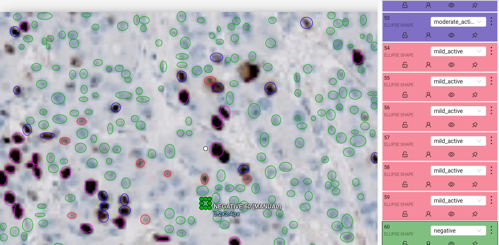

Ki-67 Cell Detection Backend
AI-powered backend for automated Ki-67 proliferation assessment from pathology slides using YOLOv11 computer vision and FastAPI.
Solution Overview
Our solution is an AI-powered automated tool that replaces manual evaluation with computer vision. The system analyzes uploaded pathology slides to automatically annotate and count Ki-67-positive cells within user-selected regions of interest.
The web application provides interactive ROI selection, allowing pathologists to mark the tumor area for precise analysis. Once selected, the model returns annotated images showing positive and negative cells, along with calculated proliferation metrics including intensity assessment (mild, moderate, strong).
Features
- Automated Detection: Automatic detection and annotation of Ki-67 positive and negative cells in pathology slides
- Proliferation Metrics: Calculation of Ki-67-positive cell percentage with intensity assessment (mild, moderate, strong)
- Region Selection: Interactive region of interest selection for pathologist input and accuracy control
- Distribution Analysis: Evaluation of Ki-67-positive cell distribution patterns within tissue samples
Tech Stack
Python
FastAPI
PyTorch/YOLOv11
Uvicorn
Technical Skills
- Rapid Prototyping: Quick API implementation with FastAPI and Uvicorn for efficient model serving
- Data Management: CVAT annotation platform setup and training data pipeline creation
- Computer Vision: YOLOv11 fine-tuning with medical imaging datasets for cell detection tasks
Features
- Automated Detection: Automatic detection and annotation of Ki-67 positive and negative cells in pathology slides
- Proliferation Metrics: Calculation of Ki-67-positive cell percentage with intensity assessment (mild, moderate, strong)
- Region Selection: Interactive region of interest selection for pathologist input and accuracy control
- Distribution Analysis: Evaluation of Ki-67-positive cell distribution patterns within tissue samples
Tech Stack
Python
FastAPI
PyTorch/YOLOv11
Uvicorn
Technical Skills
- Rapid Prototyping: Quick API implementation with FastAPI and Uvicorn for efficient model serving
- Data Management: CVAT annotation platform setup and training data pipeline creation
- Computer Vision: YOLOv11 fine-tuning with medical imaging datasets for cell detection tasks
Links
Visualizations
